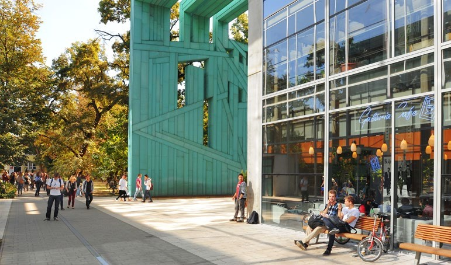
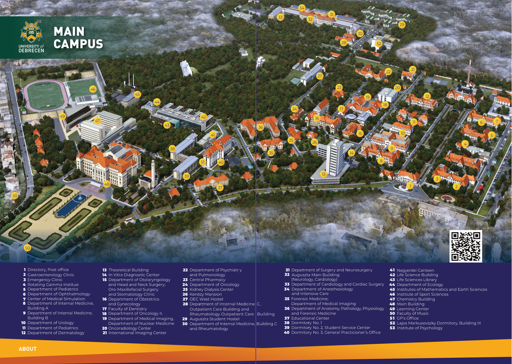
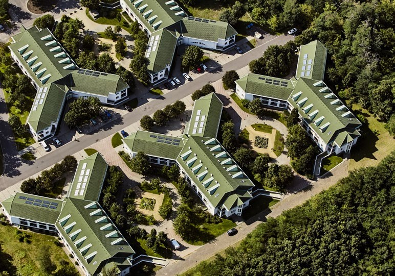

Hungary University Guide
University of Debrecen
デブレツェン大学｜英語で学ぶ正規留学ガイド
ハンガリー東部の大学都市で、医学・IT・工学・ビジネスなどを英語で学ぶ。学部・修士・博士の学位取得を目指す人へ、専攻の選び方から出願、キャンパス、住まいまでを紹介します。
更新：｜写真：University of Debrecen「International Student Guidebook 2025」p.7
Quick Summary
最初に押さえたい6つのポイント
現役生の表示人数は当サービスの相談対応者数です。大学全体の在学生数・日本人在学生数とは異なります。
About the University
幅広い専攻を持つ、大学都市の総合大学
デブレツェン大学は、医学や自然科学に加え、工学、農学、情報学、経済・ビジネス、人文・芸術などを学べる総合大学です。2025年版パンフレットでは、13学部、8キャンパス、24の博士スクールを紹介しています。学部の英語課程だけでなく、関連分野の学士号を持つ人の修士進学や、研究テーマを持つ人の博士進学も選択肢になります。
デブレツェンはブダペストから東へ約230kmに位置する都市です。大学は複数のキャンパスに分かれ、一部の専攻は別の都市でも開講されています。住まいを探す前に、自分の専攻の授業場所を確認しましょう。
出典：提供資料「International Student Guidebook 2025」pp.6–8、34–46。大学公式のパンフレット一覧。
Student Community
留学生の規模を、年度と対象を分けて見る
| 資料・対象年度 | 人数・範囲 | 読み方 |
|---|---|---|
| 2025年版パンフレット p.8 | 学生総数 約32,000人／留学生 7,600人・140か国 | 大学全体の紹介値。日本人のみの人数ではありません。 |
| 大学公式ニュース・2026/27年度 | 留学生 7,800人超の見込み | 2026年7月29日発表（8月4日更新）の予備集計。最終在籍人数ではありません。 |
| 同ニュース・2026年秋入学 | 新規留学生 約2,300人の見込み／SH新規採用 688人 | 新入生には予備課程も含まれます。688人は全在籍SH奨学生数ではありません。 |
留学生が多いことは、多国籍の学生と学ぶ環境を知る手がかりになります。ただし、年度や集計範囲が違う数字から、単純な増加率や合格倍率は算出できません。これらの資料で日本人在学生数は確認できていません。
出典：2025年版パンフレット p.8／2026/27年度の留学生に関する大学公式ニュース。
Degree Programs
英語の学位課程を選ぶ
| 分野 | 英語課程の例 | 選ぶときの視点 |
|---|---|---|
| 医学・医療 | Medicine（MD）、Dentistry（DMD）、Pharmacy（Pharm.D.）、Nursing、Physiotherapy | 医師・歯科医師・薬剤師を目指す場合は、卒業後に働く国の資格制度まで確認する。 |
| IT・自然科学 | Computer Science、Computer Science Engineering、Biology、Chemistry、Mathematics、Physics | CSはソフトウェア中心。専攻名だけでなく授業・実習内容を比較する。 |
| 工学・農学 | Mechanical Engineering、Electrical Engineering、Civil Engineering、Agricultural Engineering | 数学・理科の入試、実験・実習、必要な既修科目を確認する。 |
| ビジネス・人文・芸術 | Business Administration and Management、Commerce and Marketing、English and American Studies、音楽 | 学位、修業年限、入学時期、専攻別の試験・実技条件を確認する。 |
| 修士・博士 | Computer Science MSc、Data Science MSc、各博士課程など | 修士は学士課程の専攻・単位、博士は研究テーマと指導体制を確認する。 |
すべての専攻を掲載した一覧ではありません。専攻の開講状況・入試・所在地は大学公式のStudy Programsで確認できます。
例：Computer Science BSc
英語で学ぶ3年・6学期、180 ECTSの学士課程です。高校卒業資格と数学の筆記・口頭試験が必要で、プログラミングやアルゴリズムに加え、8週間の実習が組み込まれています。9月入学の専攻です。
Computer Science BSc公式ページ。修士のComputer Science MScは関連分野の学士号が必要な2年・4学期の課程です。
Application & Admission
出願の流れと、2027年入学で確認すること
- 専攻と出願ルートを選ぶ。私費留学とStipendium Hungaricum（SH）は、出願窓口・締切が異なります。
- 学歴・英語・専攻別条件を確認する。大学の共通出願ページではB2以上の英語証明を求めています。専攻ページに面接での判定など異なる案内がある場合は、Admissions Teamに自分に適用される条件を確認してください。
- 書類と試験の準備をする。卒業・成績関係書類、パスポート、CVなどを準備し、英訳と専攻別書類も確認します。修士・博士では既修科目や研究計画などが重要です。
- 合格後の準備を進める。Letter of Acceptanceに記載された学費・支払い条件を確認し、住まい、渡航、入学登録を準備します。
2026年10月5日時点の締切情報
- 医学・歯学：2027年9月入学の最終締切は2027年5月15日。公式ページでは募集開始を「年内に開始」と案内しています。現時点で開始済みとは断定できません。
- 2026/27年度の1月・2月入学：2026年11月1日。対象は冬入学を実施する専攻です。CS学部など9月入学のみの専攻もあります。
- その他の専攻の2027年9月入学締切、SHの2027/28年度募集は、この案内から一律には判断できません。各公式募集で確認してください。
卒業から出願までの期間（study gap）にも条件があるため、社会人や既卒の方は共通出願ページを確認しましょう。入試の実施方法・科目も専攻によって異なります。
出典：大学公式 Application and admission（確認：2026年10月5日）。締切時刻・タイムゾーンは同ページに記載されていません。
Tuition & Funding
学費と奨学金の確認
以下は大学が公開する2026/27年度入学者向け学費の抜粋です。予備課程の金額は「課程全体」、学位課程の金額は「年額」で表示しています。
| 課程 | 学位・期間 | 学費（2026/27年度） |
|---|---|---|
| Medicine | MD／6年 | 16,900 USD／年 |
| Dentistry | DMD／5年 | 17,500 USD／年 |
| Pharmacy | Pharm.D.／5年 | 8,000 USD／年 |
| Computer Science | BSc／3年 | 7,000 USD／年 |
| Computer Science | MSc／2年 | 7,500 USD／年 |
| International Foundation Year | 予備課程／9か月 | 6,000 USD／課程 |
| Intensive Foundation Semester | 予備課程／5か月 | 4,800 USD／課程 |
このほか出願料150 USD、入試料350 USDが案内されています。住居費・食費・渡航費などは別に計画してください。支払い条件や含まれる費用は、最終的に大学発行のLetter of Acceptanceで確認します。
出典：大学公式 Tuition Fee, Application + Entrance fee（確認：2026年10月5日）。2027/28年度の学費として保証するものではありません。
予備課程は、学位課程への準備
医学系のBasic Medicine Courseは生物・化学・物理など、非医学系のFoundationは数学・理科・英語などを補うための課程です。予備課程そのものは学位取得課程ではありません。修了後の進学条件と総費用を確認して選びましょう。
SHを利用する場合
SHだけに応募し、私費留学を希望しない場合、大学はTempus Public Foundationの応募システムからの出願を案内しています。日本側の推薦手続きや対象専攻、給付・締切は該当年度の公式募集要項で確認してください。
Campus Guide
キャンパス地図で、通学先を確かめる
大学は一つの敷地だけで完結するわけではありません。2025年版パンフレットはMain Campus、Böszörményi Street Campus、Kassai Campusの地図を掲載しています。Main Campusには本館、図書館、医療系施設などが集まっています。

通学時間を考える際は、学部の住所に加えて、実際の講義・実習の場所も確認してください。パンフレットには保健系課程のNyíregyházaキャンパスなど、デブレツェン以外の授業拠点も紹介されています。
地図は2025年版資料の掲載時点の配置です。現在の施設・授業場所は所属学部の案内を確認してください。
Study & Student Support
授業・試験と、学生サポート
2025年版ガイドによると、秋学期は9月〜1月、春学期は2月〜6月を基本とし、各学期は授業期間15週と試験期間6週で構成されます。専攻・年度ごとの正式な日程を優先してください。
履修登録や試験登録にはNeptunを使います。講義だけでなくセミナー、実験、実習があり、セミナーでは参加や課題、発表なども評価に関わります。授業ごとの出席・評価条件を最初に確認することが大切です。
学業・入学手続き
国際教育調整センター（CCIE）や所属課程の教務窓口が、入学・学業に関する問い合わせ先になります。
相談と日常生活
大学のメンタルヘルス支援や、住まい・生活の情報を案内するTroubleshooterが紹介されています。
出典：2025年版ガイド pp.16–19、47–49、58。日程はUniversity calendars、支援窓口は大学公式サイトで確認できます。
Housing & Daily Life
寮・民間住宅を早めに比較する
住まいの選択肢には、学生向け宿泊施設や民間アパートがあります。パンフレットではAuguszta Hotel、Study K&M hotelsを紹介していますが、いずれも医学・保健系学生向けという利用条件が記載されています。すべての学部の学生が利用できるとは限りません。
2026年の大学公式ニュースでは、寮や賃貸住宅の不足・家賃上昇が留学生受け入れの課題として挙げられています。合格後は、利用資格、空室、家賃、光熱費、保証金、通学先までの距離を早めに比較しましょう。

日常生活では、路面電車やバス、図書館、学内の食堂・レストランを利用できます。学生カードとUniPassは用途が異なるため、学内施設の利用方法と交通機関の学生割引条件はそれぞれ確認してください。
出典：2025年版ガイド pp.50–59／大学公式ニュース／Troubleshooter。
Before You Decide
正規留学の候補として、何を比較する？
- 学びたい内容：同じ「IT」「ビジネス」でも、必修科目・実習・卒業要件は大学や専攻で異なります。
- 出願準備：英語に加え、数学・理科などの試験や、修士進学に必要な既修単位を準備できるか。
- 総費用：学費だけでなく、予備課程を利用する場合の期間と費用、住居費、渡航費も含めて比較する。
- 生活環境：都市の規模、通学先、住まい、国際的な学生コミュニティが自分の希望に合うか。
- 卒業後：就職・大学院進学、専門職資格を希望する国の条件を見据えて学位を選ぶ。
現役生との相談では、授業の進め方、試験勉強、住まい探しなどの具体的な経験を聞けます。出願条件や合格判断は大学の公式案内を基準にしましょう。
Current Students
この大学の現役生に相談する
当サービスで相談に対応する現役生を紹介します。学部や学年を確認して、聞きたい内容に合う相手を選んでください。
Official Sources
公式情報と、記事の資料について
本記事は、提供された大学の「International Student Guidebook 2025」と大学公式情報をもとに編集しました。写真・地図は同パンフレットから抽出し、出典ページを明記しています（ページ番号は冊子内の表記）。写真・地図の著作権は原資料の権利者に帰属します。2025年版資料の紹介値と2026/27年度の出願情報を区別しています。最終確認日：2026年10月5日。
デブレツェン大学への留学を具体的に考える
専攻選び、授業、試験、住まい。現役生の経験を聞いて、出願前の疑問を整理しましょう。